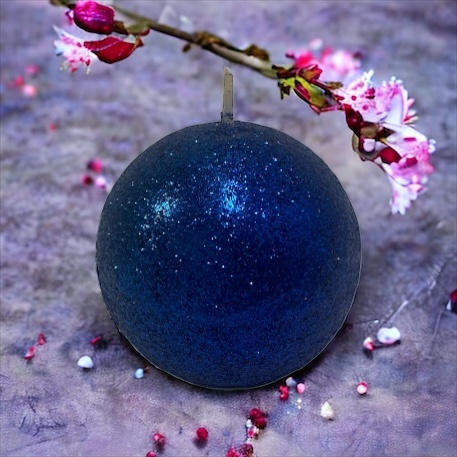

Mumlar, ev dekorasyonunda sıklıkla kullanılan şık ve atmosferik unsurlardır. Mumların sıcak ışığı, evinizi daha davetkar ve rahatlatıcı bir hale getirir. Ancak, sıradan mumlar yerine biraz daha özel bir etki arıyorsanız, simli mumlar harika bir seçenektir. Simli mumlar, parıltılı ve göz alıcı bir görünüm sunar. Bu yazıda, ev dekorasyonunda simli mumların kullanımı ve şık tasarımlar oluşturmak için ilham veren fikirler paylaşacağız.
Simli mumlar, dekorasyonlarda büyüleyici bir etki yaratır. Özellikle özel etkinlikler veya kutlamalar için mükemmel bir seçenektir. İşte simli mumlarla masa dekorasyonu için bazı fikirler: Simli Mumlarla Masa Dekorasyonu:
Masa Merkezi: Büyük ve parlak simli mumları bir araya getirerek şık bir masa merkezi oluşturabilirsiniz. Farklı yüksekliklere sahip mumları bir araya getirerek daha ilgi çekici bir görünüm elde edebilirsiniz. Mumları, şeffaf cam vazolarda veya metal mumluklarda sergileyebilirsiniz.

Şömine Rafı: Şömine rafında, simli sütun mumlarını sıralayabilirsiniz. Farklı boyutlarda ve renklerdeki
simli mumları bir araya getirerek görsel bir vurgu elde edebilirsiniz. Şömine rafını bitkiler veya diğer
dekoratif unsurlarla da tamamlayabilirsiniz.
Şömine Tabanı: Şömine tabanına birkaç büyük simli sütun mum yerleştirerek etkileyici bir görünüm elde
edebilirsiniz. Simli mumların parlaklığı, şöminenin içinde bir ateşin yanıyormuş gibi bir illüzyon
yaratır. Ayrıca, mumların altına ayna veya parlak yüzeyler yerleştirerek ışığın yansımasını
artırabilirsiniz.
Banyo Tezgahı: Simli sütun mumları veya simli tealight mumlarını banyo tezgahına yerleştirerek şık bir
görünüm elde edebilirsiniz. Ayrıca, simli daldırma mumlarını banyo aksesuarlarıyla bir araya getirerek
banyonuza göz alıcı bir atmosfer kazandırabilirsiniz.
Küvet Kenarı: Küvet kenarına birkaç simli tealight mum yerleştirerek rahatlama banyosunu daha da özel
hale getirebilirsiniz. Mumların yanına kokulu banyo tuzları veya yağlar ekleyerek banyo deneyimini
tamamlayabilirsiniz.
Simli mumlar, ev dekorasyonunda parıltı ve şıklık katmak için harika bir seçenektir. Masa
dekorasyonunda, şömine üzerinde veya banyoda kullanarak evinizde romantik bir atmosfer yaratabilirsiniz.
Simli mumlarla evinizi kişiselleştirin ve misafirlerinizi etkileyin. Farklı şekil ve renklerdeki simli
mumları kullanarak kendi tasarımlarınızı oluşturun ve evinizdeki dekorasyona benzersiz bir parlaklık
katın.